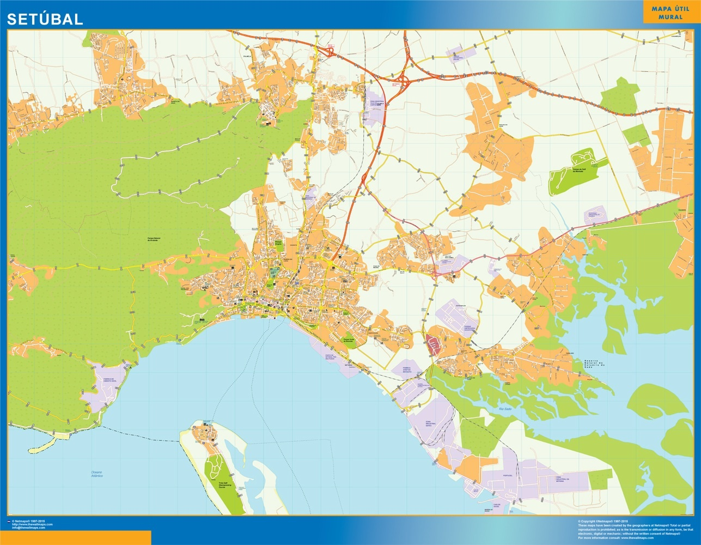

Informações Práticas
Endereço: Praça do Município, Setúbal. Telefone: +351 265 540 000. Email: info@cm-setubal.pt. Horário: 9h-17h, dias úteis.
Dicas para Visitantes
A pesca é uma excelente atividade para se fazer em Setúbal, se tiver alguma duvida sobre o munincípo não hesite em contactar.